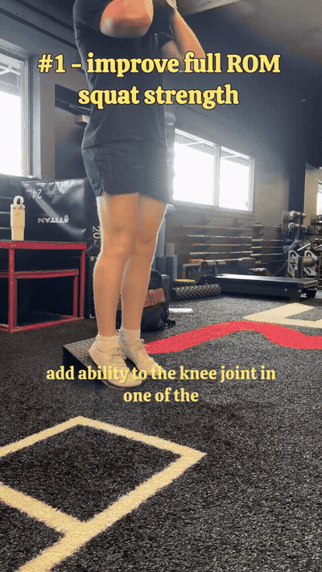
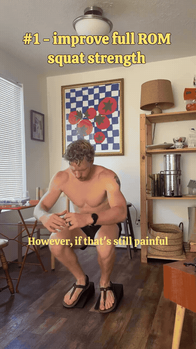
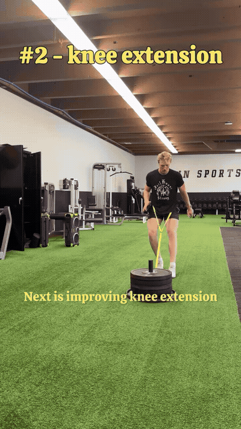
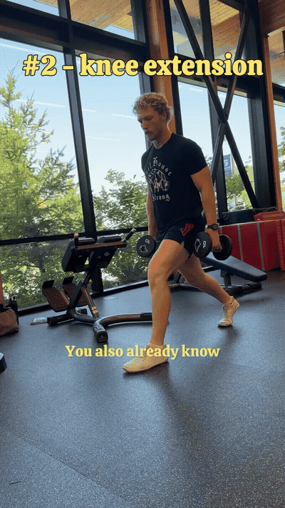
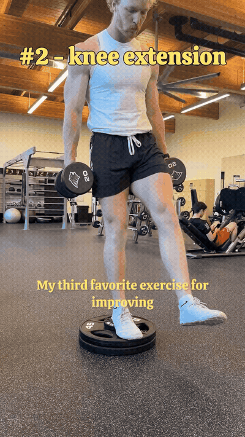
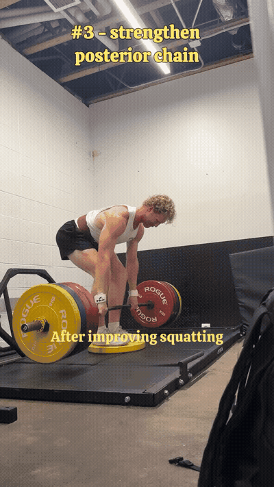
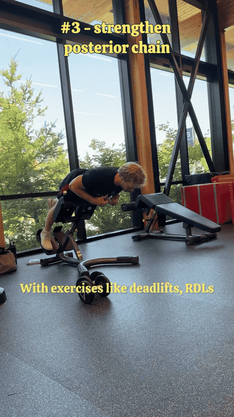
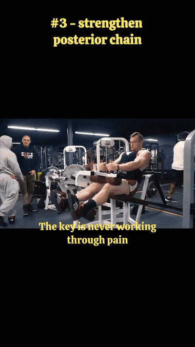
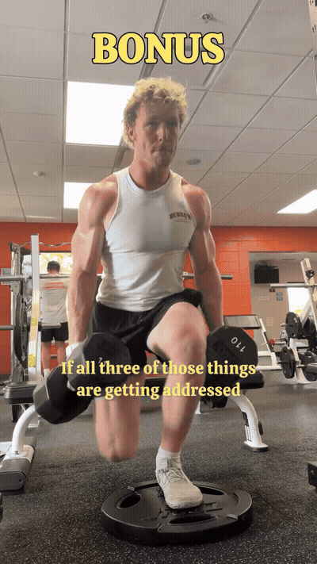
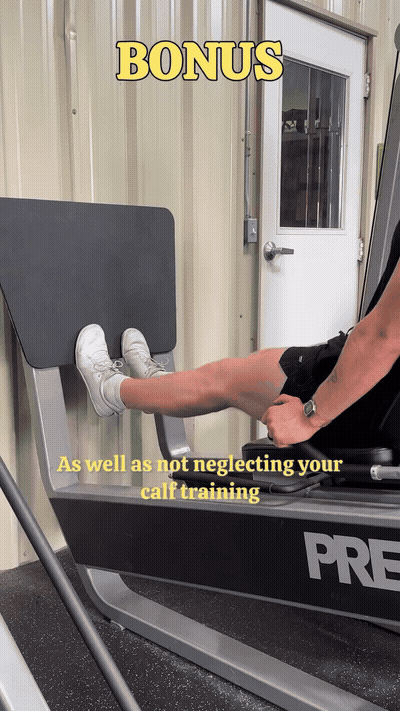

Adding strength in the squat position is the most potent way to add capacity to a knee joint. Tempo keeps it about control — not about how much you can load.

If the goblet squat is still painful, the starting point isn't a different exercise — it's the same pattern, unloaded. Sit to a box, hold support, and own the range.

The sled is mostly concentric — you push, you don't lower — so it's pain-free for most people and doesn't leave you sore. It's the lowest-risk way to load the knee through extension.

The ATG split squat progresses knee extension through a deep range of motion. The variation that earns its keep is the pause at 90° — you spend time owning the exact angle that usually hurts.

Heel elevated, slow on the way down, pause at the bottom. The reel's call: this hammers the VMO better than any other exercise he's done.

The backside of the knee matters as much as the front. Deadlifts are the anchor of that block — hips back, spine neutral, bar close.

A low-back and hip-extension movement you can load gently and progress for a long time without beating up the knee.

Direct knee-flexion strength — the direction nobody trains when their knee hurts, and the one that keeps the joint balanced front to back.

Once the three pillars are being addressed, progress to a lunge or split-squat variation. Rear foot elevated, front leg does the work.

Calf training is another key component of strong, healthy knees — and the leg press lets you load it without vertical balance demands.
Never work through pain. Sharp pain is information, not a challenge. Back the range or the load off until the movement is clean, then rebuild.
Progress slowly and intentionally. Strength is the goal of part 3, but the dose is small and repeated — not heroic and sporadic.
Address all three pillars. Squat pattern · knee extension · posterior chain. Skipping the backside is the most common way this stalls.
Sequence matters. Part 1 is daily blood flow. Part 2 is restoring range of motion. Part 3 — this guide — is strength on top of those.